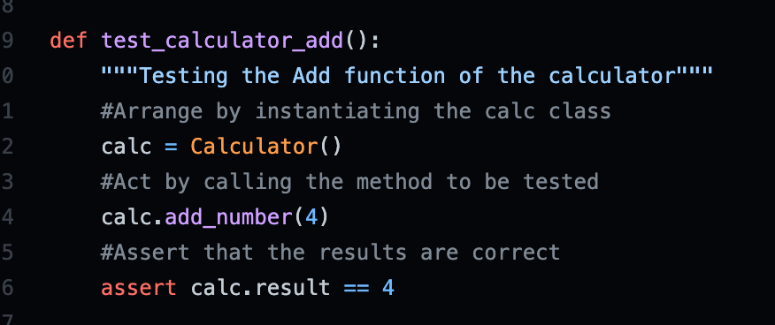

While learning python, it's important to understand the use of pylint tool. This is a tool that allows programmer to check their python code for errors. There are other types of tests done in python or coding in general, such as unit test or end-to-end testing, but pylint tool is easier and shorter to read, along with re-usability and no connections to sites like travis, that are needed. It is often used to enforce a coding standard and looks for deeper issues within the code. However it is important to note, that while pylint is a great tool for checking codes and errors, it is still useful to gp back and review. So how does pylint work? To understand how lynting works, it's easier to use AAA testing, also known as Arrange-Act-Assert, which is a great way to structure the codes. In arrange, act and assert, the arrange part is about setting the testing objects to prepare the pre-requisite of the test. The act part is to preform the actual work of the test and the assert portion is to verify the results. Here is an example of the set.
In the example above, we have the format of Arrange, Act and Assert. In this format the arrange is where we set up the objects that will be tested. This includes the addition function of the calculator, we then had an act which calls the addition method and